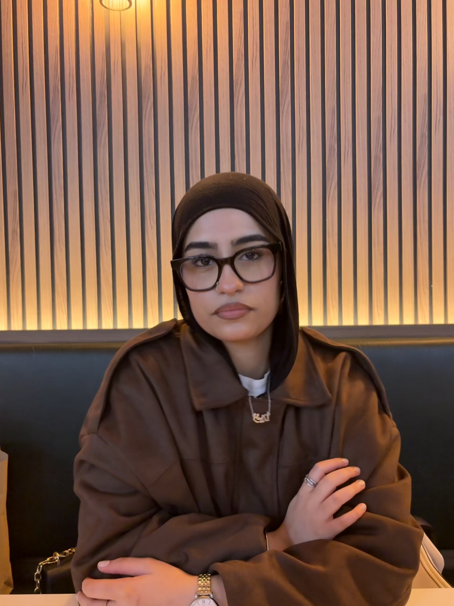

Get to Know Me

Hi! My name is Zunaira, and I am a 2nd year Networking and IT Security student at Ontario Tech University who is interested in technology, creativity, and business.
I am currently learning web development and how websites are created using HTML and CSS. I enjoy learning new skills and finding creative ways to bring my ideas to life.
Along with my studies, I run three businesses. My first business is a no-brand reselling business, where I buy and resell different products. My second business is Ezza Label, a fashion and clothing brand that I am always building and developing. Finally, my third business is an NFC review and menu card business where I help businesses make their daily customer interaction as convenient as possible.
Running my businesses has helped me learn about creativity, communication, organization, and working with customers. I hope to continue growing my businesses while developing my skills in technology and web development.
A Little More About Me
Outside of school and my businesses, I also enjoy fashion and listening to music and discovering new artists. Music is something I enjoy in my free time, especially when I am working, relaxing, or spending time with friends and family.
One of my favourite artists is JUL. I really enjoy his music and the different styles in his songs. I listen to many of his songs, so I decided to include one of my favourite music videos on my portfolio.
One of My Favourite Songs
Avant la douane is one of my favourite songs by JUL. I really enjoy his music, and I hope you enjoy listening to it too!